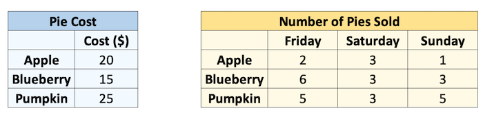
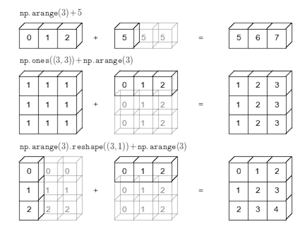
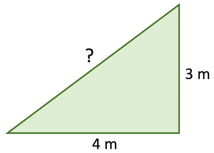

Chapter 5: Introduction to NumPy¶
Chapter Outline
Chapter Learning Objectives¶
Use NumPy to create arrays with built-in functions inlcuding
np.array(),np.arange(),np.linspace()andnp.full(),np.zeros(),np.ones()Be able to access values from a NumPy array by numeric indexing and slicing and boolean indexing
Perform mathematical operations on and with arrays.
Explain what broadcasting is and how to use it.
Reshape arrays by adding/removing/reshaping axes with
.reshape(),np.newaxis(),.ravel(),.flatten()Understand how to use built-in NumPy functions like
np.sum(),np.mean(),np.log()as stand alone functions or as methods of numpy arrays (when available)
1. Introduction to NumPy¶
NumPy stands for “Numerical Python” and it is the standard Python library used for working with arrays (i.e., vectors & matrices), linear algerba, and other numerical computations. NumPy is written in C, making NumPy arrays faster and more memory efficient than Python lists or arrays, read more: (link 1, link 2, link 3).
NumPy can be installed using conda (if not already):
conda install numpy
2. NumPy Arrays¶
What are Arrays?¶
Arrays are “n-dimensional” data structures that can contain all the basic Python data types, e.g., floats, integers, strings etc, but work best with numeric data. NumPy arrays (“ndarrays”) are homogenous, which means that items in the array should be of the same type. ndarrays are also compatible with numpy’s vast collection of in-built functions!

Source: Medium.com
Usually we import numpy with the alias np (to avoid having to type out n-u-m-p-y every time we want to use it):
import numpy as np
A numpy array is sort of like a list:
my_list = [1, 2, 3, 4, 5]
my_list
[1, 2, 3, 4, 5]
my_array = np.array([1, 2, 3, 4, 5])
my_array
array([1, 2, 3, 4, 5])
But it has the type ndarray:
type(my_array)
numpy.ndarray
Unlike a list, arrays can only hold a single type (usually numbers):
my_list = [1, "hi"]
my_list
[1, 'hi']
my_array = np.array((1, "hi"))
my_array
array(['1', 'hi'], dtype='<U21')
Above: NumPy converted the integer 1 into the string '1'!
Creating arrays¶
ndarrays are typically created using two main methods:
From existing data (usually lists or tuples) using
np.array(), like we saw above; or,Using built-in functions such as
np.arange(),np.linspace(),np.zeros(), etc.
my_list = [1, 2, 3]
np.array(my_list)
array([1, 2, 3])
Just like you can have “multi-dimensional lists” (by nesting lists in lists), you can have multi-dimensional arrays (indicated by double square brackets [[ ]]):
list_2d = [[1, 2], [3, 4], [5, 6]]
list_2d
[[1, 2], [3, 4], [5, 6]]
array_2d = np.array(list_2d)
array_2d
array([[1, 2],
[3, 4],
[5, 6]])
You’ll probably use the built-in numpy array creators quite often. Here are some common ones (hint - don’t forget to check the docstrings for help with these functions, if you’re in Jupyter, remeber the shift + tab shortcut):
np.arange(1, 5) # from 1 inclusive to 5 exclusive
array([1, 2, 3, 4])
np.arange(0, 11, 2) # step by 2 from 1 to 11
array([ 0, 2, 4, 6, 8, 10])
np.linspace(0, 10, 5) # 5 equally spaced points between 0 and 10
array([ 0. , 2.5, 5. , 7.5, 10. ])
np.ones((2, 2)) # an array of ones with size 2 x 2
array([[1., 1.],
[1., 1.]])
np.zeros((2, 3)) # an array of zeros with size 2 x 3
array([[0., 0., 0.],
[0., 0., 0.]])
np.full((3, 3), 3.14) # an array of the number 3.14 with size 3 x 3
array([[3.14, 3.14, 3.14],
[3.14, 3.14, 3.14],
[3.14, 3.14, 3.14]])
np.full((3, 3, 3), 3.14) # an array of the number 3.14 with size 3 x 3 x 3
array([[[3.14, 3.14, 3.14],
[3.14, 3.14, 3.14],
[3.14, 3.14, 3.14]],
[[3.14, 3.14, 3.14],
[3.14, 3.14, 3.14],
[3.14, 3.14, 3.14]],
[[3.14, 3.14, 3.14],
[3.14, 3.14, 3.14],
[3.14, 3.14, 3.14]]])
np.random.rand(5, 2) # random numbers uniformly distributed from 0 to 1 with size 5 x 2
array([[0.31658748, 0.03022873],
[0.45887575, 0.86662331],
[0.13207967, 0.85047239],
[0.19284452, 0.4145791 ],
[0.53239103, 0.5968896 ]])
There are many useful attributes/methods that can be called off numpy arrays:
print(dir(np.ndarray))
['T', '__abs__', '__add__', '__and__', '__array__', '__array_finalize__', '__array_function__', '__array_interface__', '__array_prepare__', '__array_priority__', '__array_struct__', '__array_ufunc__', '__array_wrap__', '__bool__', '__class__', '__complex__', '__contains__', '__copy__', '__deepcopy__', '__delattr__', '__delitem__', '__dir__', '__divmod__', '__doc__', '__eq__', '__float__', '__floordiv__', '__format__', '__ge__', '__getattribute__', '__getitem__', '__gt__', '__hash__', '__iadd__', '__iand__', '__ifloordiv__', '__ilshift__', '__imatmul__', '__imod__', '__imul__', '__index__', '__init__', '__init_subclass__', '__int__', '__invert__', '__ior__', '__ipow__', '__irshift__', '__isub__', '__iter__', '__itruediv__', '__ixor__', '__le__', '__len__', '__lshift__', '__lt__', '__matmul__', '__mod__', '__mul__', '__ne__', '__neg__', '__new__', '__or__', '__pos__', '__pow__', '__radd__', '__rand__', '__rdivmod__', '__reduce__', '__reduce_ex__', '__repr__', '__rfloordiv__', '__rlshift__', '__rmatmul__', '__rmod__', '__rmul__', '__ror__', '__rpow__', '__rrshift__', '__rshift__', '__rsub__', '__rtruediv__', '__rxor__', '__setattr__', '__setitem__', '__setstate__', '__sizeof__', '__str__', '__sub__', '__subclasshook__', '__truediv__', '__xor__', 'all', 'any', 'argmax', 'argmin', 'argpartition', 'argsort', 'astype', 'base', 'byteswap', 'choose', 'clip', 'compress', 'conj', 'conjugate', 'copy', 'ctypes', 'cumprod', 'cumsum', 'data', 'diagonal', 'dot', 'dtype', 'dump', 'dumps', 'fill', 'flags', 'flat', 'flatten', 'getfield', 'imag', 'item', 'itemset', 'itemsize', 'max', 'mean', 'min', 'nbytes', 'ndim', 'newbyteorder', 'nonzero', 'partition', 'prod', 'ptp', 'put', 'ravel', 'real', 'repeat', 'reshape', 'resize', 'round', 'searchsorted', 'setfield', 'setflags', 'shape', 'size', 'sort', 'squeeze', 'std', 'strides', 'sum', 'swapaxes', 'take', 'tobytes', 'tofile', 'tolist', 'tostring', 'trace', 'transpose', 'var', 'view']
x = np.random.rand(5, 2)
x
array([[0.20983428, 0.54170816],
[0.50059837, 0.44160885],
[0.52684962, 0.9519489 ],
[0.53092945, 0.4622409 ],
[0.32498283, 0.21731213]])
x.transpose()
array([[0.20983428, 0.50059837, 0.52684962, 0.53092945, 0.32498283],
[0.54170816, 0.44160885, 0.9519489 , 0.4622409 , 0.21731213]])
x.mean()
0.4708013495289487
x.astype(int)
array([[0, 0],
[0, 0],
[0, 0],
[0, 0],
[0, 0]])
Array Shapes¶
As you just saw above, arrays can be of any dimension, shape and size you desire. In fact, there are three main array attributes you need to know to work out the characteristics of an array:
.ndim: the number of dimensions of an array.shape: the number of elements in each dimension (like callinglen()on each dimension).size: the total number of elements in an array (i.e., the product of.shape)
array_1d = np.ones(3)
print(f"Dimensions: {array_1d.ndim}")
print(f" Shape: {array_1d.shape}")
print(f" Size: {array_1d.size}")
Dimensions: 1
Shape: (3,)
Size: 3
Let’s turn that print action into a function and try out some other arrays:
def print_array(x):
print(f"Dimensions: {x.ndim}")
print(f" Shape: {x.shape}")
print(f" Size: {x.size}")
print("")
print(x)
array_2d = np.ones((3, 2))
print_array(array_2d)
Dimensions: 2
Shape: (3, 2)
Size: 6
[[1. 1.]
[1. 1.]
[1. 1.]]
array_4d = np.ones((1, 2, 3, 4))
print_array(array_4d)
Dimensions: 4
Shape: (1, 2, 3, 4)
Size: 24
[[[[1. 1. 1. 1.]
[1. 1. 1. 1.]
[1. 1. 1. 1.]]
[[1. 1. 1. 1.]
[1. 1. 1. 1.]
[1. 1. 1. 1.]]]]
After 3 dimensions, printing arrays starts getting pretty messy. As you can see above, the number of square brackets ([ ]) in the printed output indicate how many dimensions there are: for example, above, the output starts with 4 square brackets [[[[ indicative of a 4D array.
1-d Arrays¶
One of the most confusing things about numpy is 1-d arrays (vectors) can have 3 possible shapes!
x = np.ones(5)
print_array(x)
Dimensions: 1
Shape: (5,)
Size: 5
[1. 1. 1. 1. 1.]
y = np.ones((1, 5))
print_array(y)
Dimensions: 2
Shape: (1, 5)
Size: 5
[[1. 1. 1. 1. 1.]]
z = np.ones((5, 1))
print_array(z)
Dimensions: 2
Shape: (5, 1)
Size: 5
[[1.]
[1.]
[1.]
[1.]
[1.]]
We can use np.array_equal() to determine if two arrays have the same shape and elements:
np.array_equal(x, x)
True
np.array_equal(x, y)
False
np.array_equal(x, z)
False
np.array_equal(y, z)
False
The shape of your 1-d arrays can actually have big implications on your mathematical oeprations!
print(f"x: {x}")
print(f"y: {y}")
print(f"z: {z}")
x: [1. 1. 1. 1. 1.]
y: [[1. 1. 1. 1. 1.]]
z: [[1.]
[1.]
[1.]
[1.]
[1.]]
x + y # makes sense
array([[2., 2., 2., 2., 2.]])
y + z # wait, what?
array([[2., 2., 2., 2., 2.],
[2., 2., 2., 2., 2.],
[2., 2., 2., 2., 2.],
[2., 2., 2., 2., 2.],
[2., 2., 2., 2., 2.]])
What happened in the cell above is “broadcasting” and we’ll discuss it below.
3. Array Operations and Broadcasting¶
Elementwise operations¶
Elementwise operations refer to operations applied to each element of an array or between the paired elements of two arrays.
x = np.ones(4)
x
array([1., 1., 1., 1.])
y = x + 1
y
array([2., 2., 2., 2.])
x - y
array([-1., -1., -1., -1.])
x == y
array([False, False, False, False])
x * y
array([2., 2., 2., 2.])
x ** y
array([1., 1., 1., 1.])
x / y
array([0.5, 0.5, 0.5, 0.5])
np.array_equal(x, y)
False
Broadcasting¶
ndarrays with different sizes cannot be directly used in arithmetic operations:
a = np.ones((2, 2))
b = np.ones((3, 3))
a + b
---------------------------------------------------------------------------
ValueError Traceback (most recent call last)
<ipython-input-45-7b429ebe865f> in <module>
1 a = np.ones((2, 2))
2 b = np.ones((3, 3))
----> 3 a + b
ValueError: operands could not be broadcast together with shapes (2,2) (3,3)
Broadcasting describes how NumPy treats arrays with different shapes during arithmetic operations. The idea is to wrangle data so that operations can occur element-wise.
Let’s see an example. Say I sell pies on my weekends. I sell 3 types of pies at different prices, and I sold the following number of each pie last weekend. I want to know how much money I made per pie type per day.

cost = np.array([20, 15, 25])
print("Pie cost:")
print(cost)
sales = np.array([[2, 3, 1], [6, 3, 3], [5, 3, 5]])
print("\nPie sales (#):")
print(sales)
Pie cost:
[20 15 25]
Pie sales (#):
[[2 3 1]
[6 3 3]
[5 3 5]]
How can we multiply these two arrays together? We could use a loop:

total = np.zeros((3, 3)) # initialize an array of 0's
for col in range(sales.shape[1]):
total[:, col] = sales[:, col] * cost
total
array([[ 40., 60., 20.],
[ 90., 45., 45.],
[125., 75., 125.]])
Or we could make them the same size, and multiply corresponding elements “elementwise”:

cost = np.repeat(cost, 3).reshape((3, 3))
cost
array([[20, 20, 20],
[15, 15, 15],
[25, 25, 25]])
cost * sales
array([[ 40, 60, 20],
[ 90, 45, 45],
[125, 75, 125]])
Congratulations! You just broadcasted! Broadcasting is just Numpy eessentially doing the np.repeat() for you under the hood:
cost = np.array([20, 15, 25]).reshape(3, 1)
print(f" cost shape: {cost.shape}")
sales = np.array([[2, 3, 1], [6, 3, 3], [5, 3, 5]])
print(f"sales shape: {sales.shape}")
cost shape: (3, 1)
sales shape: (3, 3)
sales * cost
array([[ 40, 60, 20],
[ 90, 45, 45],
[125, 75, 125]])
In NumPy the smaller array is “broadcast” across the larger array so that they have compatible shapes:

Source: Python Data Science Handbook by Jake VanderPlas (2016)
Why should you care about broadcasting? Well, it’s cleaner and faster than looping and it also affects the array shapes resulting from arithmetic operations. Below, we can time how long it takes to loop vs broadcast:
cost = np.array([20, 15, 25]).reshape(3, 1)
sales = np.array([[2, 3, 1],
[6, 3, 3],
[5, 3, 5]])
total = np.zeros((3, 3))
time_loop = %timeit -q -o -r 3 for col in range(sales.shape[1]): total[:, col] = sales[:, col] * np.squeeze(cost)
time_vec = %timeit -q -o -r 3 cost * sales
print(f"Broadcasting is {time_loop.average / time_vec.average:.2f}x faster than looping here.")
Broadcasting is 8.08x faster than looping here.
Of course, not all arrays are compatible! NumPy compares arrays element-wise. It starts with the trailing dimensions, and works its way forward. Dimensions are compatible if:
they are equal, or
one of them is 1.
Use the code below to test out array compatibitlity:
a = np.ones((3, 2))
b = np.ones((3, 2, 1))
print(f"The shape of a is: {a.shape}")
print(f"The shape of b is: {b.shape}")
print("")
try:
print(f"The shape of a + b is: {(a + b).shape}")
except:
print(f"ERROR: arrays are NOT broadcast compatible!")
The shape of a is: (3, 2)
The shape of b is: (3, 2, 1)
ERROR: arrays are NOT broadcast compatible!
Reshaping Arrays¶
There are 3 key reshaping methods I want you to know about for reshaping numpy arrays:
.rehshape()np.newaxis.ravel()/.flatten()
x = np.full((4, 3), 3.14)
x
array([[3.14, 3.14, 3.14],
[3.14, 3.14, 3.14],
[3.14, 3.14, 3.14],
[3.14, 3.14, 3.14]])
You’ll reshape arrays farily often and the .reshape() method is pretty intuitive:
x.reshape(6, 2)
array([[3.14, 3.14],
[3.14, 3.14],
[3.14, 3.14],
[3.14, 3.14],
[3.14, 3.14],
[3.14, 3.14]])
x.reshape(2, -1) # using -1 will calculate the dimension for you (if possible)
array([[3.14, 3.14, 3.14, 3.14, 3.14, 3.14],
[3.14, 3.14, 3.14, 3.14, 3.14, 3.14]])
a = np.ones(3)
print_array(a)
b = np.ones((3, 2))
print_array(b)
Dimensions: 1
Shape: (3,)
Size: 3
[1. 1. 1.]
Dimensions: 2
Shape: (3, 2)
Size: 6
[[1. 1.]
[1. 1.]
[1. 1.]]
If I want to add these two arrays I won’t be able to because their dimensions are not compatible:
a + b
---------------------------------------------------------------------------
ValueError Traceback (most recent call last)
<ipython-input-58-bd58363a63fc> in <module>
----> 1 a + b
ValueError: operands could not be broadcast together with shapes (3,) (3,2)
Sometimes you’ll want to add dimensions to an array for broadcasting purposes like this. We can do that with np.newaxis (note that None is an alias for np.newaxis). We can add a dimension to a to make the arrays compatible:
print_array(a[:, np.newaxis]) # same as a[:, None]
Dimensions: 2
Shape: (3, 1)
Size: 3
[[1.]
[1.]
[1.]]
a[:, np.newaxis] + b
array([[2., 2.],
[2., 2.],
[2., 2.]])
Finally, sometimes you’ll want to “flatten” arrays to a single dimension using .ravel() or .flatten(). .flatten() used to return a copy and .ravel() a view/reference but now they both return a copy so I can’t think of an important reason to use one over the other 🤷♂️
x
array([[3.14, 3.14, 3.14],
[3.14, 3.14, 3.14],
[3.14, 3.14, 3.14],
[3.14, 3.14, 3.14]])
print_array(x.flatten())
Dimensions: 1
Shape: (12,)
Size: 12
[3.14 3.14 3.14 3.14 3.14 3.14 3.14 3.14 3.14 3.14 3.14 3.14]
print_array(x.ravel())
Dimensions: 1
Shape: (12,)
Size: 12
[3.14 3.14 3.14 3.14 3.14 3.14 3.14 3.14 3.14 3.14 3.14 3.14]
4. Indexing and slicing¶
Concepts of indexing should be pretty familiar by now. Indexing arrays is similar to indexing lists but there are just more dimensions.
Numeric Indexing¶
x = np.arange(10)
x
array([0, 1, 2, 3, 4, 5, 6, 7, 8, 9])
x[3]
3
x[2:]
array([2, 3, 4, 5, 6, 7, 8, 9])
x[:4]
array([0, 1, 2, 3])
x[2:5]
array([2, 3, 4])
x[2:3]
array([2])
x[-1]
9
x[-2]
8
x[5:0:-1]
array([5, 4, 3, 2, 1])
For 2D arrays:
x = np.random.randint(10, size=(4, 6))
x
array([[9, 4, 9, 7, 8, 1],
[3, 3, 9, 6, 0, 0],
[0, 1, 5, 9, 6, 3],
[6, 7, 0, 6, 8, 8]])
x[3, 4] # do this
8
x[3][4] # i do not like this as much
8
x[3]
array([6, 7, 0, 6, 8, 8])
len(x) # generally, just confusing
4
x.shape
(4, 6)
x[:, 2] # column number 2
array([9, 9, 5, 0])
x[2:, :3]
array([[0, 1, 5],
[6, 7, 0]])
x.T
array([[9, 3, 0, 6],
[4, 3, 1, 7],
[9, 9, 5, 0],
[7, 6, 9, 6],
[8, 0, 6, 8],
[1, 0, 3, 8]])
x
array([[9, 4, 9, 7, 8, 1],
[3, 3, 9, 6, 0, 0],
[0, 1, 5, 9, 6, 3],
[6, 7, 0, 6, 8, 8]])
x[1, 1] = 555555
x
array([[ 9, 4, 9, 7, 8, 1],
[ 3, 555555, 9, 6, 0, 0],
[ 0, 1, 5, 9, 6, 3],
[ 6, 7, 0, 6, 8, 8]])
z = np.zeros(5)
z
array([0., 0., 0., 0., 0.])
z[0] = 5
z
array([5., 0., 0., 0., 0.])
Boolean Indexing¶
x = np.random.rand(10)
x
array([0.12700105, 0.36011086, 0.82508582, 0.56646415, 0.35503842,
0.52200749, 0.34272111, 0.59669545, 0.25618968, 0.82273245])
x + 1
array([1.12700105, 1.36011086, 1.82508582, 1.56646415, 1.35503842,
1.52200749, 1.34272111, 1.59669545, 1.25618968, 1.82273245])
x_thresh = x > 0.5
x_thresh
array([False, False, True, True, False, True, False, True, False,
True])
x[x_thresh] = 0.5 # set all elements > 0.5 to be equal to 0.5
x
array([0.12700105, 0.36011086, 0.5 , 0.5 , 0.35503842,
0.5 , 0.34272111, 0.5 , 0.25618968, 0.5 ])
x = np.random.rand(10)
x
array([0.33847366, 0.43610173, 0.30564705, 0.5099709 , 0.93375661,
0.1333407 , 0.50820287, 0.66291725, 0.07292992, 0.58978083])
x[x > 0.5] = 0.5
x
array([0.33847366, 0.43610173, 0.30564705, 0.5 , 0.5 ,
0.1333407 , 0.5 , 0.5 , 0.07292992, 0.5 ])
5. More Useful NumPy Functions¶
Numpy has many built-in functions for mathematical operations, really it has almost every numerical operation you might want to do in its library. I’m not going to explore the whole library here, but as an example of some of the available functions, consider working out the hypotenuse of a triangle that with sides 3m and 4m:

sides = np.array([3, 4])
There are several ways we could solve this problem. We could directly use Pythagoras’s Theorem:
np.sqrt(np.sum([np.power(sides[0], 2), np.power(sides[1], 2)]))
5.0
We can leverage the fact that we’re dealing with a numpy array and apply a “vectorized” operation (more on that in a bit) to the whole vector at one time:
(sides ** 2).sum() ** 0.5
5.0
Or we can simply use a numpy built-in function (if it exists):
np.linalg.norm(sides) # you'll learn more about norms in 573
5.0
np.hypot(*sides)
5.0
Vectorization¶
Broadly speaking, “vectorization” in NumPy refers to the use of optmized C code to perform an operation. Long-story-short, because numpy arrays are homogenous (contain the same dtype), we don’t need to check that we can perform an operation on elements of a sequence before we do the operation which results in a huge speed-up. You can kind of think of this concept as NumPy being able to perform an operation on the whole array at the same time rather than one-by-one (this is not actually the case, a super-efficient C loop is still running under the hood, but that’s an irrelevant detail). You can read more about vectorization here but all you need to know is that most operations in NumPy are vectorized, so just try to do things at an “array-level” rather than an “element-level”, e.g.:
# DONT DO THIS
array = np.array(range(5))
for i, element in enumerate(array):
array[i] = element ** 2
array
array([ 0, 1, 4, 9, 16])
# DO THIS
array = np.array(range(5))
array **= 2
Let’s do a quick timing experiment:
# loop method
array = np.array(range(5))
time_loop = %timeit -q -o -r 3 for i, element in enumerate(array): array[i] = element ** 2
# vectorized method
array = np.array(range(5))
time_vec = %timeit -q -o -r 3 array ** 2
print(f"Vectorized operation is {time_loop.average / time_vec.average:.2f}x faster than looping here.")
Vectorized operation is 4.63x faster than looping here.